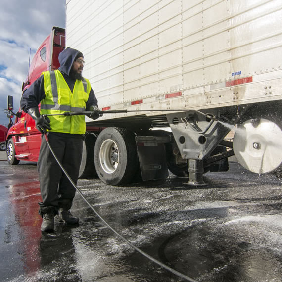

Installation Guide
Full step-by-step instructions ship with every kit — simple, fast, and ready in about 20 minutes. No specialized tools required.
The Kingpin MAX calibration tool is designed based on the North American industry standard 36" Kingpin Offset (36" from the trailer's front bulkhead/nose to the center of the kingpin).
Before applying your stickers or using the installation tape, you must verify the KPL of your trailer (whether it is a 53' or 48' unit):
- Check the Manufacturer Spec Plate: Look at the metallic specification plate mounted on the front corner or frame rail of the trailer (e.g., Utility, Wabash, Great Dane, Stoughton, Vanguard). Locate the Kingpin Offset / KPL value.
- Manual Physical Measurement: If the plate is unreadable, measure the distance from the front wall (nose) of the trailer to the center of the kingpin pin under the skid plate:
- 36" (3.0 Feet): North American industry standard for the vast majority of 53' Dry Vans and Reefers. Proceed directly with standard Red Mark alignment.
- 30" (2.5 Feet): Also found on some 48' vans and specialized 53' Reefers. (Requires using the +6" offset adjustment point).
- 24" or 18": Typical on flatbeds, stepdecks, or short platforms. (Requires manual offset adjustment).
If your trailer does not have the standard 36" KPL, apply the following correction to your tape measurement:
- If KPL is 30" (6" shorter than standard): Shift your sticker placement 6 inches toward the front of the trailer.
- If KPL is 24" (12" shorter than standard): Shift your sticker placement 12 inches toward the front of the trailer.
- If KPL is 18" (18" shorter than standard): Shift your sticker placement 18 inches toward the front of the trailer.

Proper surface preparation is critical to ensure long-term adhesion of the reflective decal to the trailer's side rail or chassis, especially under harsh over-the-road (OTR) conditions, high vibrations, and weather exposure.
- Debris and Contaminant Removal: Begin by thoroughly washing the target application area on the trailer frame or side rail using a commercial detergent or automotive-grade degreaser to remove road grime, heavy dirt, oil, and brake dust accumulation.
- Chemical Degreasing: Wipe down the exact bonding area using a clean microfiber cloth saturated with isopropyl alcohol (IPA) or a surface preparation solvent. This eliminates invisible grease, wax residues, or manufacturing release agents from the metal.
- Temperature and Moisture Check: Ensure the metal surface is completely dry and within the recommended temperature range (ideally between 50°F / 10°C and 90°F / 32°C). If the trailer has been parked in freezing or humid conditions, use a heat gun or allow the metal to acclimate to prevent moisture from compromising the initial adhesive bond.
- Surface Inspection: Inspect the cleaned area by touch and sight. The metal must be completely smooth, bare (or properly painted without peeling clear coat/rust), and free of any particulate matter before proceeding to alignment.
Step-by-step instructions and photos for this step are still being written.
Step-by-step instructions and photos for this step are still being written.
The final inspection ensures that the decal is securely bonded, completely free of application defects, and fully legible to withstand demanding over-the-road (OTR) conditions and weather exposure.
- Visual Edge and Bubble Check: Carefully inspect the entire perimeter and surface of the decal. Ensure there are no lifted edges, corners, or air bubbles trapped beneath the vinyl. If minor air pockets are found, gently push them out toward the nearest edge using a clean squeegee or gloved thumb.
- Adhesive Edge Sealing: Run a clean finger or squeegee edge firmly along all four borders of the decal to ensure full adhesive contact against the metal rail, particularly where the trailer experiences high vibration or wind shear.
- Legibility and Alignment Verification: Stand back and verify that all text, diagrams, and measurement markers are clean, unobstructed, and easy to read from a normal standing position next to the trailer.
- Weather-Resistance Readiness: Confirm that the protective top laminate is intact and that no moisture or solvent residue remains underneath. Once verified, the installation is complete and the equipment is ready for highway operation.
Downloadable PDF
Get the full installation guide as a printable PDF — same steps, ready to keep on hand during install.